Message in a Bottleneck
Architected Interpretability ArchInterp for Neuroimaging
Sergey Plis
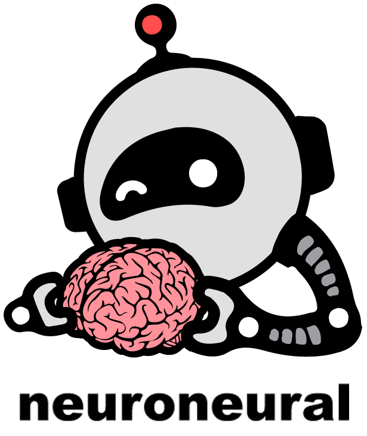
We were confused
- Can Deep Learning do what we do already?
- Can it do more?
- What can it do for subject populations?
- Do we have enough data?
- What can it do for single subjects?
main question
Can we learn from the model something about the data that we did not explicitly teach it?
higher level concepts
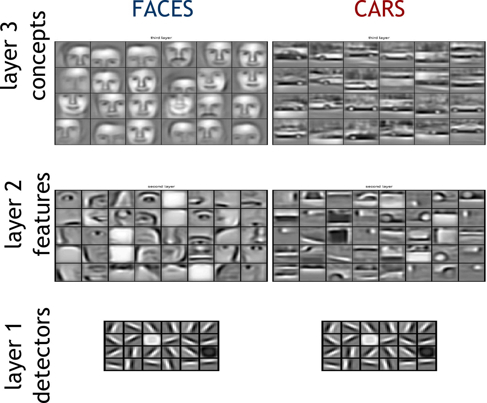harder to interpret for fMRI
MNIST dataset
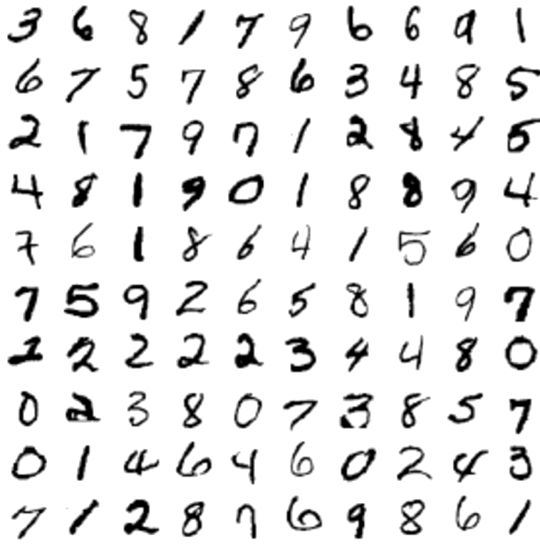400 brains
schizophrenia vs. healthy controls
depth effect (dynamic)
depth effect (static)
3500 brains
Huntington's disease
severity within prodromal HD
CAG-length Age Product (CAP) score- Low
score
very similar to healthy controls in cognitive and motor performance - Medium
score
increasing deficit - High
score
largest deficit in cognitive and motor performance though not yet clinically diagnosable
gray matter concentration differences by group
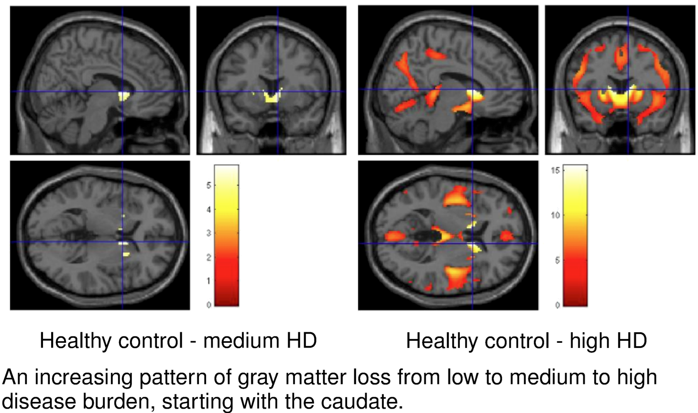B-SNIP
status quo
A Simple but tough to beat predictive model
Pavel Popov
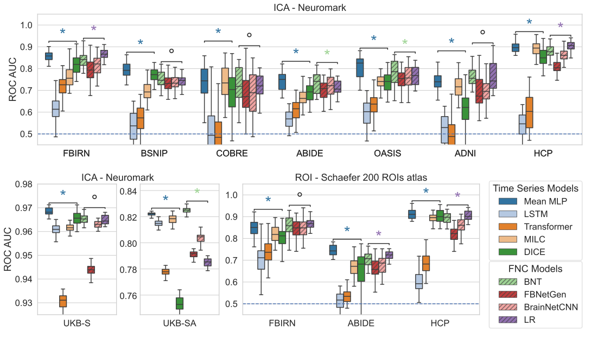
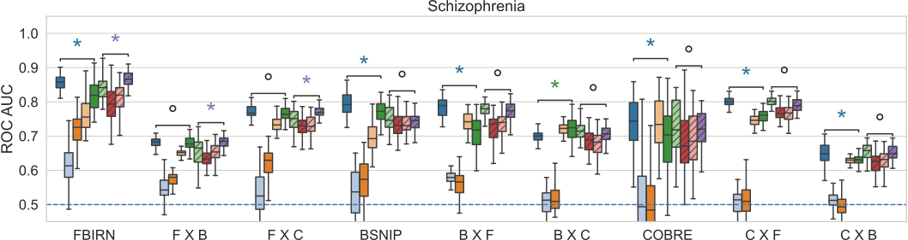
AI for Knowledge discovery

interpretability: a thriving field
Two types of eXplainable AI
Explain the data
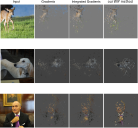Interpret the model
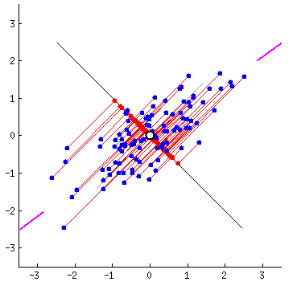ArchInterp
Graphs as Interpretable Representations
genetic network
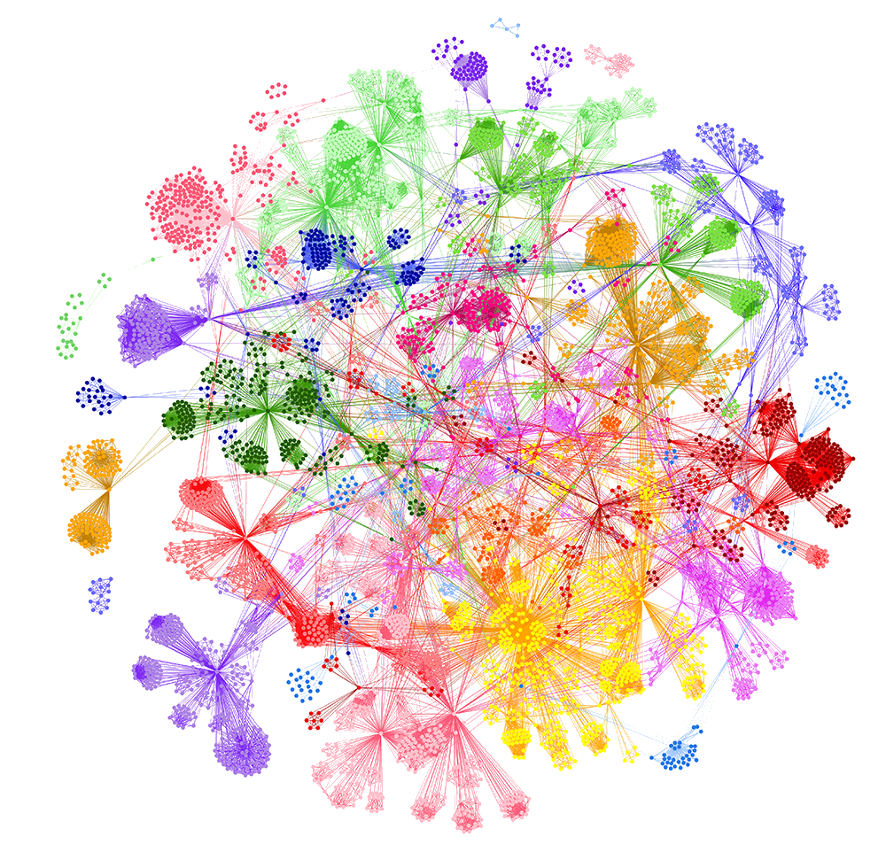
networks of chess games
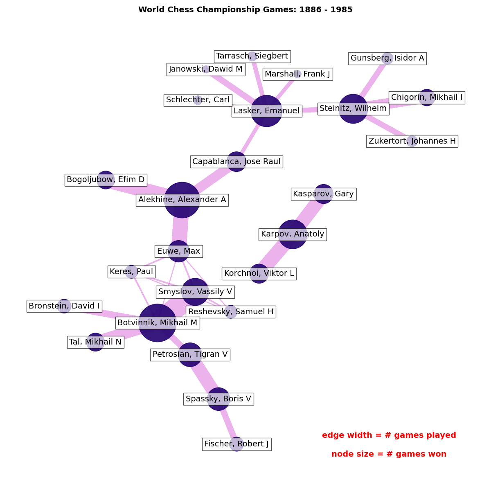
philosophy network
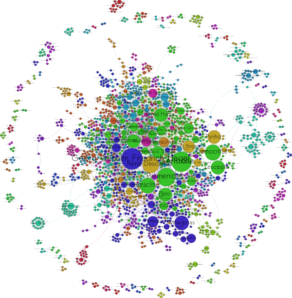
W3C specs
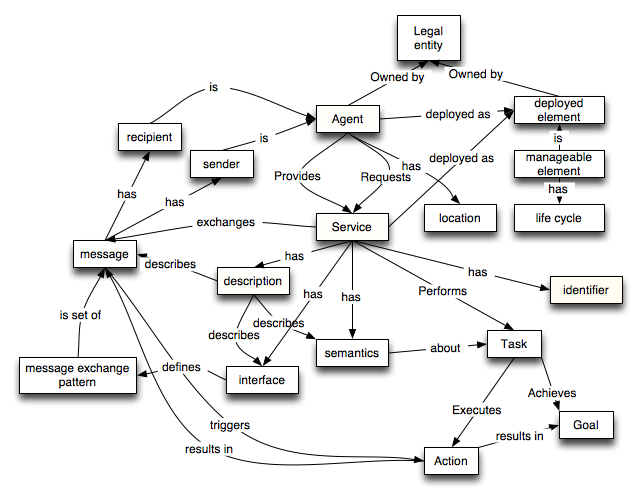
Titanic survival DT
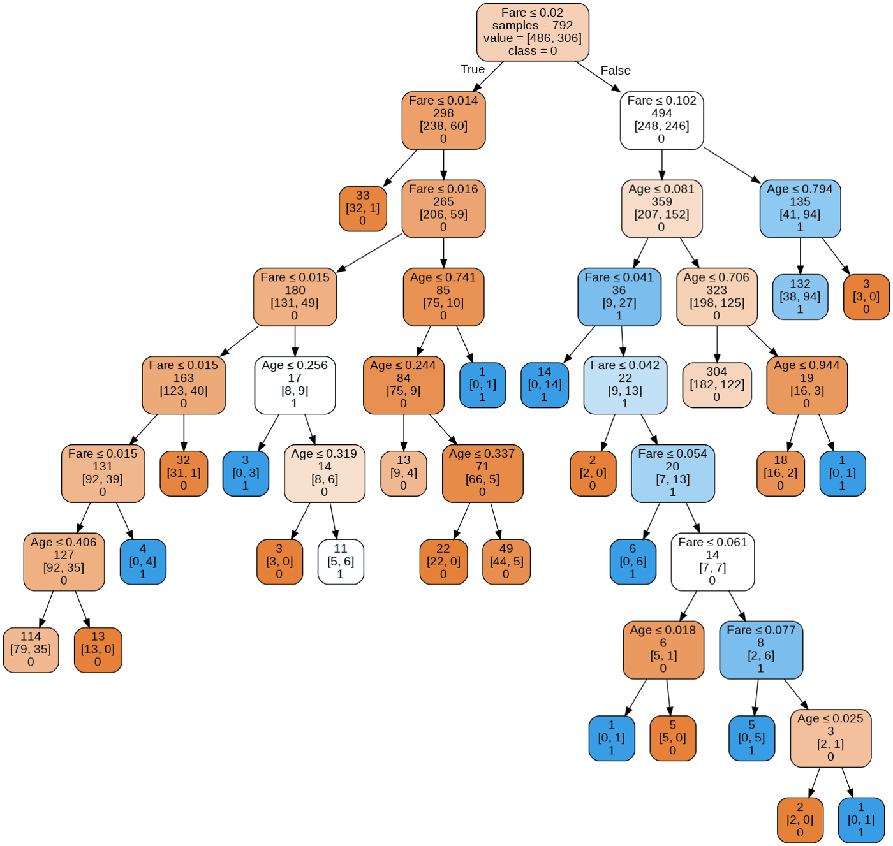
Neural Net
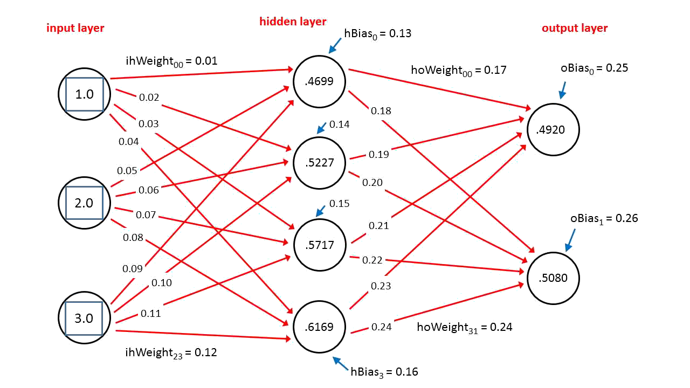
Architected Interpretability with Graphs
- To see through a black box model we need a window
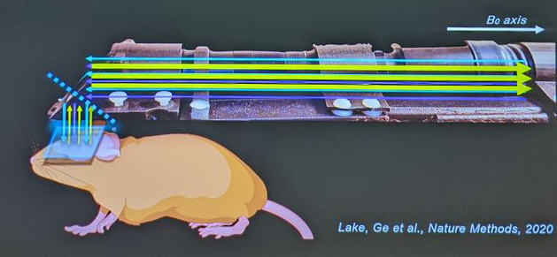
- Our window is a graph, but we want the model to use it too
windowless directed connectivity
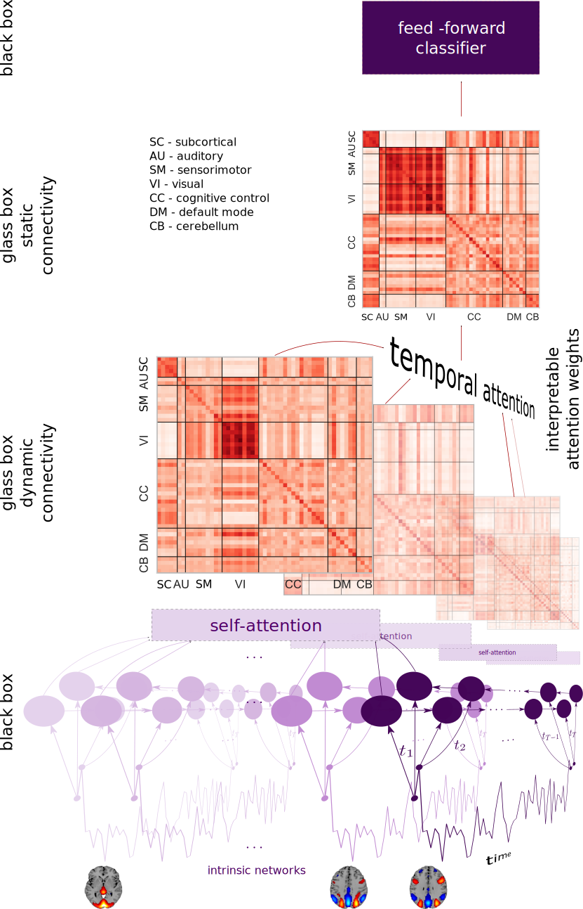spatiotemporal connectivity
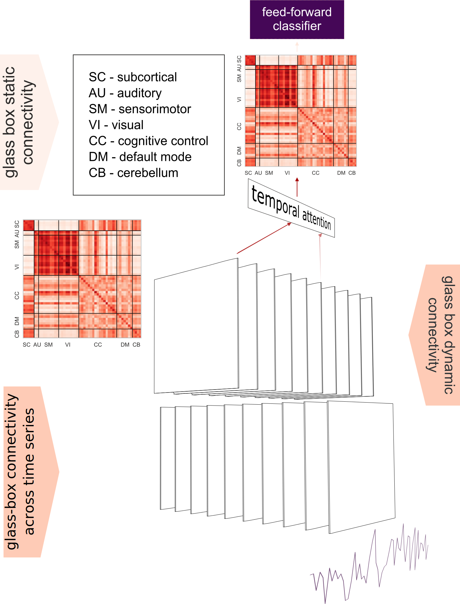Usman Mahmood
Interpretable glass-box layer for brains
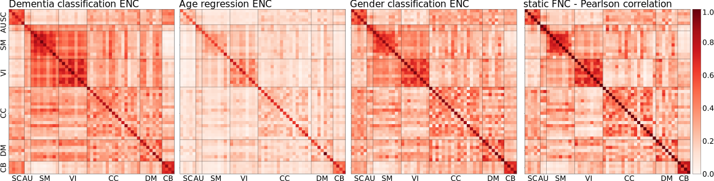
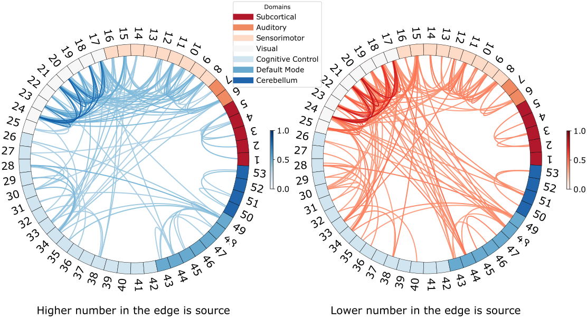
Pavel Popov
Archinterp with "Causal" graphs
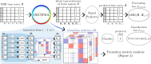Pavel Popov